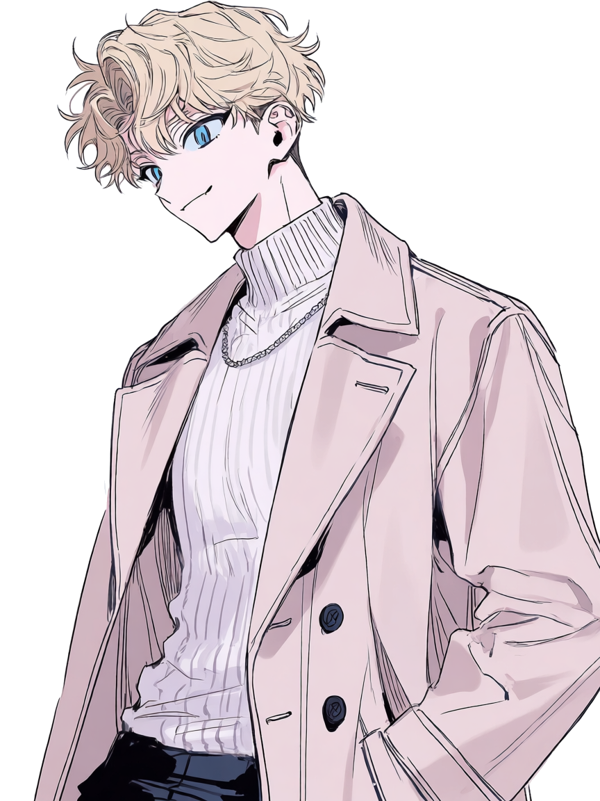
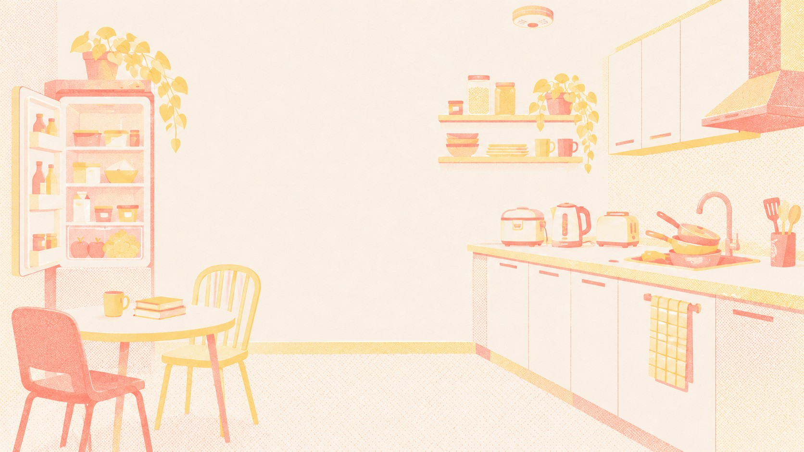
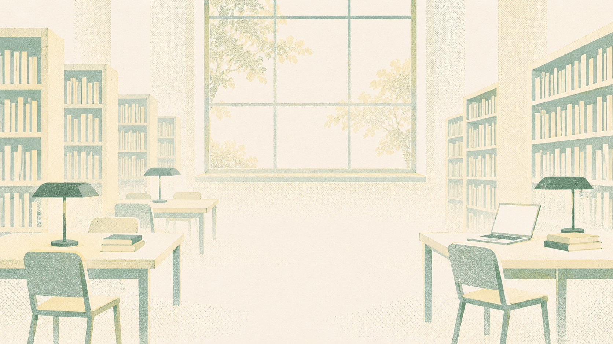
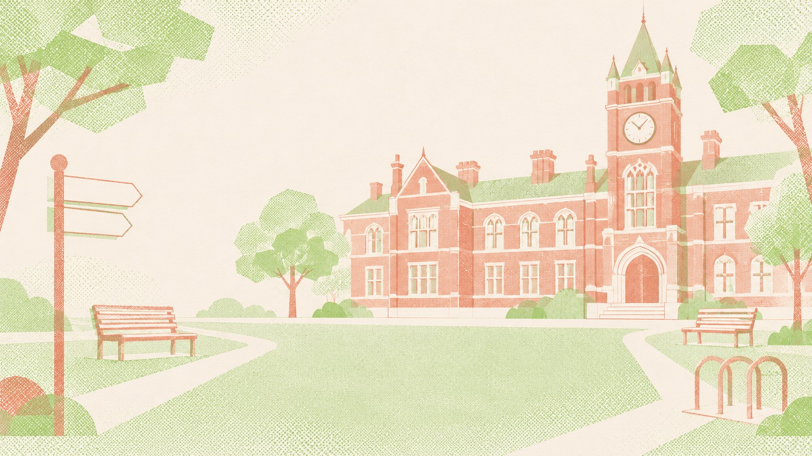
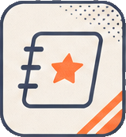
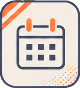
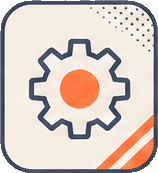
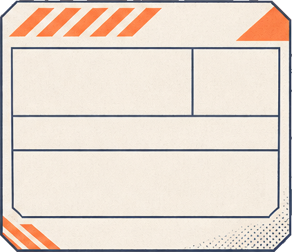

0
8
大一·秋Autumn Term
WEEK 08 / 28
£520≈¥4836
精力ENERGY
80/100
学业STUDY
36/100
融入BELONG
18/100
作业ESSAY
40/100
手机Phone
存档Save
设置Config

01HUD：周数翻牌、钱、五个读数（有上限的写 /100；孤独偏高用“▲偏高”和斜纹进度条提示，不用橙色）、三个按钮（“存档”是悬停／焦点状态：墨蓝底）。对话框：记录／自动／快进挪到框外右上方，“自动”开着是墨蓝底白字。
▶ 换周（看翻牌）▶ 切换译文：小字 ／ 中文优先
操作：空格回车／手柄 A 前进，按住 Ctrl／RB 快进，Esc／Start 菜单，滚轮上滚／LB 记录。
操作：空格回车／手柄 A 前进，按住 Ctrl／RB 快进，Esc／Start 菜单，滚轮上滚／LB 记录。
A1
Thanks! Yours is gorgeous.
B2
我们先建个群分工吧
C3
（不说话）
02选项：车票，票根是大字母和对应的数字键。选项上不显示任何数值（Cora 定）。B 是焦点／悬停状态（同一个样子：换成高亮车票、往右挪、左边出现 ▶）。
操作：1–4 直接选；↑↓／方向键移动，回车／A 确认。可以在这页上试。
操作：1–4 直接选；↑↓／方向键移动，回车／A 确认。可以在这页上试。
本周日程This Week · Departures→
选一个活动，填进下一个空格ACTIVITIES
清空Clear
开始这一周Depart→
03日程：右边点一个活动（或者键盘 ↑↓ 选、回车 放），自动填进下一个空着的日子；点时刻表里排好的一行就清空那一行。当前要填的那一天露出底板的橙色线路条。下面一行“本周预计”替玩家算好周五晚上的精力。可以在这页上试。
开局 · 你是谁Arrivals · Who Are You↗
家境Budget
拮据Tight
中产Middle
富裕Comfy
中产够用，偶尔肉疼。
住宿Housing
学校宿舍Halls
ensuiteEnsuite
studioStudio
家境富裕才能选学校宿舍国际 flat，室友随机。
返回Back
存档Save→
下一步Next→
落地英国Land→
04开局：选中是橙框橙字；焦点停在哪个选项，下面一行就显示它的说明（不用悬停）；studio 灰掉，下面直接写“家境富裕才能选”。按钮四种状态：次按钮、次按钮悬停（墨蓝底）、主按钮、主按钮悬停（橙色不变，字加下划线、箭头前移）。可以用方向键在选项间移动试试。
NOW
ARRIVING
ARRIVING
下一站：大一·春Next Stop: Spring Term
→
点一下或按任意键跳过
05换学期、假期：到站广播从右边滑进来，250ms 停住；点一下或按任意键马上划走。同一个存档第二次看到时只停 1 秒。▶ 再播一次
火车线路
你选中的路线
你住的城市
可以去的城市
06出城地图：线平时是墨蓝，焦点停在哪个城市，那条线和那个城市变橙（橙色＝当前）；右下角写清楚去那里要花什么：钱、占整个周末、精力。左下角是图例。底图自带的白色点线不是我们画的，见下面的说明。可以用方向键在城市间移动试试。
终点站 · ‘普通DISCO’Terminus · Ordinary Disco
三年。没有什么大事。图书馆四楼靠窗的位置，中超周四到货，楼下那家炸鱼薯条醋放得最多。挺好的。


回到标题Title
继续Continue→
07结局：左边相框放这个结局对应的 CG（样张里先用毕业典礼那张占位，哪个结局配哪张 CG 等策划定），右边横线上是明信片正文（照 结局明信片文案.md），结局名写在上面的“终点站”站牌里，右下角两个按钮。
留学生活
模拟器
模拟器
（暂名）大一，从落地开始Study Abroad Simulator
08标题：用 menu_1~4 四张撕纸条做菜单，斜着排在右边、压在背景自带的色带上，没有外框；Logo 墨蓝字加橙色错位阴影，副标题小一号墨蓝字。悬停／焦点：纸条往左移、字加下划线、左边出现 ▶。没有存档时“继续”变灰并写一行原因（样张里先都能点）。
设置Config↗
返回BackESC
文字速度Text Speed
60
BGM 音量Music
60
音效音量Sound
70
对话时显示主角头像Show Portrait
开
英文台词的译文Translation
小字中文优先关
API 设置AI Chat
手机聊天、小红书用；Key 只存在本机→
回到标题Title↩
退出游戏Quit→
BGM 音量
背景音乐的音量，和音效分开调。← → 或手柄左右调大小，回车／A 确认。
09设置：满屏系统页。每一行用 settings_panel.png（登机牌）；滑杆是墨蓝描边、橙色填充；开关用 toggle_on／off.png，旁边写“开／关”两个字（不只靠颜色）；译文三档（评审第 7 条）。焦点在哪一行，右边说明框就讲这一行是干什么的。右上角“返回 BACK”＋Esc。最下面一条粗线隔开“回到标题”和“退出游戏”：回到标题先弹确认（写明上次自动存档在哪、之后的进度会丢），只在游戏里出现；退出游戏只在桌面版出现，网页版关不了自己的标签页。
存档Save↗
存档读档
返回BackESC

存档 1SLOT 01小林 大一·秋 第8周2026-11-17 21:04

存档 2SLOT 02小林 大一·秋 第11周2026-11-16 23:40

存档 3SLOT 03阿秋 大二·搬家周2026-11-15 12:18
存档 4SLOT 04空 EMPTY
存档 5SLOT 05空 EMPTY
存档 6SLOT 06空 EMPTY
10存档／读档：save_slot.png 行李牌，两列三行；缩略图用存档时的背景，三行字分别压在牌子的三条线上（名字和进度、日期）；空的格子是虚线框加“空 EMPTY”；刚才存的那格标“当前”。上面两个页签切换存档／读档；读档页多一格“自动存档”。
新邮件New Mail✉
FROM 发件人Dr. Marcia CampbellPersonal Tutor · 社会学系
WEEK19周二 上午
SUBJECTTea. Thursday. 2pm. Not optional.
标题译文喝茶。周四。下午两点。不是可选的。（邮件没有正文，只有这一行标题。）
知道了OK→
11邮件卡片（剧本里的【邮件：发件人｜标题】）：用 shipping_label.png 快递面单，格子里分别是发件人、第几周、标题、正文；英文标题下面跟中文翻译。背景压 40% 墨蓝，看完点“知道了”关掉，不存档（照 手机与友情.md，不做邮箱系统）。
小林WEEK 08
聊天Chat3
动态Moments

小红书Notes
日历Calendar
设置Config
邮件Mail1大一·秋
第 8 周Autumn Term · Week 08
第 8 周Autumn Term · Week 08
‹ 聊天CHAT
消息动态
群
小组群Hannah：I've made a doc…
O
Olliesee you at the pub? x
好感 72交往中
J
Jakewho ate my noodles
友情 65朋友
吴
吴桐电饭煲谁用了
友情 34熟人
E
Essay学姐亲～加急也可以的哦
12手机：背景压 50% 墨蓝；手机框用 phone_frame.png，标题栏不加框。主屏六个 App：聊天、动态、小红书、日历、设置、邮件（动态暂时用相机图标；邮件还没有图标，先用快递面单缩小顶着，要一张 app_mail.png）。聊天列表：攻略对象写“好感”，固定 NPC 写“友情”和档位；“交往中”是墨蓝描边的小标签（不用橙色，橙色只留给当前页签“消息”）。
回忆Memories↗
返回BackESC
CGIllustrations12 / 32
结局Postcards & Stamps5 / 18
13回忆：CG 和结局放在同一页，不分页签。上面是 CG（32 格，三行，含 4 张告白 CG），点开全屏看；下面是结局：主线结局（邮票）和盖章（邮戳：First、恋爱裁判、恋爱ing、四个人的 HE／BE），拿到过的显示图和名字，点开重看那张明信片；没拿到的是虚线框加“?”。焦点框用橙色（当前）。
这周过完了Week 08 · Report→
MON周一上课精力−8学业+1.2
TUE周二图书馆精力−12学业+2.1孤独+1
└ 室友用了你的锅没洗。孤独+1
WED周三做作业精力−12作业+20
THU周四社交精力−3孤独−7.5融入+1.8
FRI周五宅家精力+15
出分了：作业 1Results · Assignment 167.52:1
周末出门Weekend→
14周结算和出分：时刻表的写法（MON 周一 · 上课 ……… 数值变化），涨跌只用 + / − 号，不靠红绿；随机小事件缩进一格。出分用一块墨蓝站牌，分数是画面里最大的字，等级（First、2:1……）放在框里。出分时播一次短音效。
周末Weekend1/4
结束这周End Week→
15周末城市地图：插画和行李牌照旧（任务单说它是标准）。右上角一块“周末 / WEEKEND”站牌，行动点用 4 个圆点＋数字（剩 1 点）；花 2 点的地方（酒吧街、brunch）和车站锁上，牌子下面直接写地名和原因（“酒吧街：要 2 点，不够”）。焦点／悬停：牌子转一下、放大一点。
‹ 邮件MAIL
Dr. Marcia CampbellTea. Thursday. 2pm. Not optional.喝茶。周四。下午两点。不是可选的。
W19Student RecordsYour Semester 1 results are now available第一学期成绩已经出来了
W13Dr. Marcia CampbellPersonal tutor meeting – Week 2personal tutor 见面 · 第2周
W02Accommodation OfficeFire alarm test this Thursday本周四火警演习
W01FROM 发件人Dr. Marcia CampbellPersonal Tutor · 社会学系
WEEK19周二 上午
SUBJECTTea. Thursday. 2pm. Not optional.
标题译文喝茶。周四。下午两点。不是可选的。（邮件没有正文，只有这一行标题。）
16信箱（Cora 2026-11-17 要加）：剧情里弹出过的邮件都存进手机的“邮件”App，可以回头看。左边是列表（发件人、英文标题＋中文、第几周），没看过的前面一个实心点；右边是选中的那封，样子和弹出来的邮件卡片（11）一样。邮件要跟着存档走。